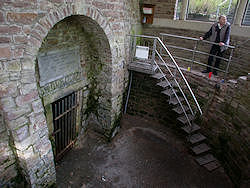

| In Deutsch |
| In Deutsch |
Dunsthöhle
Useful Information
 |
| Image: the pavillion on top of the Dunsthöhle. |
| Location: | Helvetiushügel, Bad Pyrmont. |
| Open: |
MAR Sat, Sun 13-16:30. APR to OCT daily 15-17:40. NOV Sat, Sun 13-16:30. Tours continually with two visitors. [2011] |
| Fee: |
Adults EUR 1.50, Children (0-14) EUR 0.50. Groups (20+): Adults EUR 1. [2011] |
| Classification: | adit in a former sandstone quarry |
| Light: | electric |
| Dimension: | L=3m, W=2m. |
| Guided tours: | D=10min. |
| Photography: | |
| Accessibility: | |
| Bibliography: |
Ursula Möhring, Joachim Garfs (1987):
Bad Pyrmont,
Otto Uhlmann Verlag, Bad Pyrmont
( |
| Address: |
Dunsthöhle in Bad Pyrmont, Niedersächsisches Staatsbad Pyrmont, Postfach 1660, 31798 Bad Pyrmont, Tel: +49-5281-151588 oder +49-5283-8487.
Informations-Zentrum, Europa-Platz 1, 31812 Bad Pyrmont, Tel: +49-5281-940511, Fax: +49-5281-940555. E-mail: |
| As far as we know this information was accurate when it was published (see years in brackets), but may have changed since then. Please check rates and details directly with the companies in question if you need more recent info. |
|
| Last update: | $Date: 2015/11/20 13:16:44 $ |
History
| 1720 | first experiments with the carbon dioxide made. | |
| 1720 | Dunsthöhle developed by Dr. Seip. | |
| 1737 | Dunsthöhle renovated by Dr. Seip. | |
| 1775 | gas identified as carbon dioxide. | |
| 1801 | Goethe made experiments with the invisible gas. | |
| 1950 | first modern carbon dioxide spring spa of Germany inaugurated. | |
| 1993 | carbon dioxide baths in the Therapiezentrum Königin-Luise-Bad. |
Geology
|  |
| Image: The carbon dioxide source is inside the door, but the whole place is filled with gas. |
The genesis of the natural carbon dioxide is connected with the local volcanism. The gas comes from a depth of 3,000m and penetrates through fissures in the rocks. It is a gas emission of the lava, not carbon dioxide from the atmosphere. The gas accrues during the cooling of basaltic magma as last product of gas release.
The carbon dioxide is transported by water, which rises in the nearbymineral water springs. The origin in deep volcanism can be proved with the amount of heavy metal ions in the water. But the carbonated water looses some of its carbonic acid in the sandstone below the Dunstgrotte, and the carbon dioxide rises through fissures in the rock.
Description
 |
| Image: soap bubbles swim on the carbon dioxide. |
The Dunsthöhle (fume cave) was named after the famous Brunnenarzt (spa doctor) Dr. Johann Philipp Seip (1686-1757). The cave is an adit in the former quarry of Bad Pyrmont and several cases of faint amongst the quarry workers were reported. Dr. Seip assumed an invisible and heavy gas being the reason, he called the "Schwefeldunst" (sulfur fume).
1775 the gas was identified as carbon dioxide (CO2) also known as carbonic acid. This gas is heavier than normal air and so it flows out of the cave and fills the forecourt. At first, when the cave was still alfresco, the wind was able to blow away the carbon dioxide, and only the cave itself was filled with gas. But today the forecourt and the cave entrance are surrounded by a circular wall and the building was errected above. Now the gas forms a sort of invisible lake in the circular wall and only changes in temperature affect the gas by changing its level.
The gas is invisible and so the only possibility to proof its existance is by experiment. The easiest experiment is a candle at the end of a long iron rod. The candle burns until it reaches the surface of the carbon dioxide lake and then it goes out. This shows, that the gas is not poisonous, it is contained in normal air. But because of its weight it flows on the floor and make a lake of pure carbon dioxide without oxygene. And whoever enters this lake, suffocates because of anoxia. During the centuries, this fact was utilized several times by people committing suicide.
An even more interesting experiment is made with ordinary soap bubbles. They do not sink to the floor, but they swim on the surface of the carbon dioxide lake. The air inside the bubble is lighter than the carbon dioxide and its buoyancy is big enough to hold the weight of the soap water. And most impressing: it is possible to pour water through the bubble, without destroying it.
The carbon dioxide is used for therapy in the Therapiezentrum "Königin-Luise-Bad". "Carbon dioxide spring baths" and "carbon dioxide iron baths" work by reception through the skin. The baths are used to cure blood vessel diseases, or as a therapy for not healing wounds.
 |
| Dunsthöhle Gallery |
- See also
 Search Google for "Dunsthöhle"
Search Google for "Dunsthöhle" Google Earth Placemark
Google Earth Placemark Dunsthöhle - Natur erleben - Niedersachsen.de
(visited: 26-FEB-2011)
(
Dunsthöhle - Natur erleben - Niedersachsen.de
(visited: 26-FEB-2011)
( )
)- Staatsbad Pyrmont - Dunsthoehle
(visited: 26-FEB-2011)
()
- Quermania - Bad Pyrmont - Dunsthöhle - Niedersachsen - Reiseziele, Sehenswürdigkeiten und Bilder in Deutschland
(visited: 26-FEB-2011)
()
- Bad-Pyrmont
(visited: 26-FEB-2011)
()
- Dunsthöhle => - Lausbub In Emmendingen Online
(visited: 26-FEB-2011)
()
- Dunsthöhle - Bad Pyrmont - Liufilm
(visited: 26-FEB-2011)
()